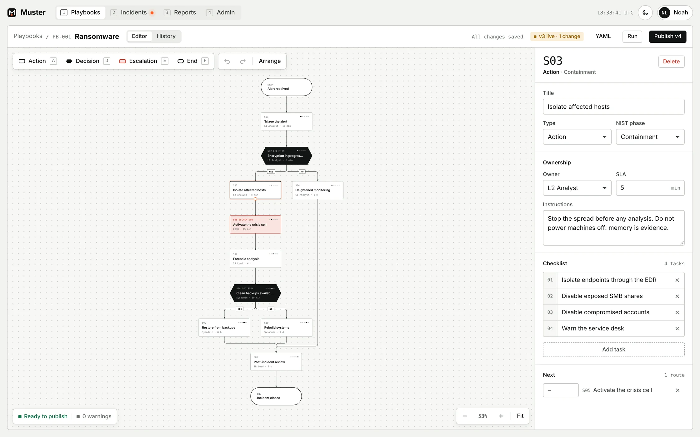

01 — Draw
Playbooks as diagrams, not documents.
Actions, decisions and escalations on a canvas that arranges itself. Every step has an owner, an SLA, a NIST phase and a checklist.
- Keyboard-first: A action, D decision, E escalation, F end
- Drag a handle onto a step to connect it; undo, redo, auto-arrange
- Validation before publishing: dead ends, unreachable steps, missing owners
